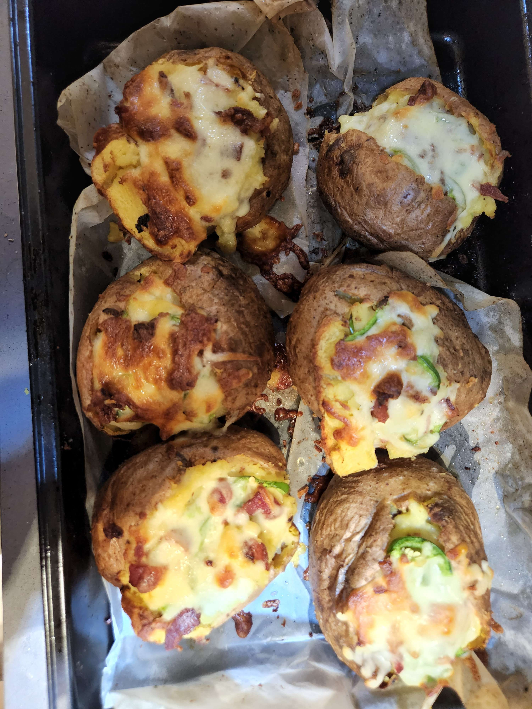

Twice Baked Potato

Description
A comforting main or side with customizable toppings.
Ingredients
- Brushed potato
- Salt
- Pepper
- Garlic powder
- Jalapeno, sliced
- Butter, unsalted
- Chives or green onion, sliced
- Milk or heavy cream, if desired
- Bacon, chopped
- Bacon grease, or olive oil
- Tomato, diced
- Tasty or cheddar cheese, shredded
Steps
- Preheat oven to 180 C.
- Wash potatoes until clean and pat dry.
- Coat potatoes with oil, generous amount of salt, and garlic powder and pepper.
- Prick potato with fork 8 times.
- Cook potatoes in oven for about 40-60 minutes, until soft in center.
- Slice potato in half and scoop out filling into a bowl, leaving about a centimeter worth of potato on the skin.
- Add butter to filling and mash to break up large pieces.
- Add bacon, green onion, some cheese, salt and pepper to filling. Reserve some of the cheese for topping.
- Mash the filling to desired consistency. Add milk, cream, or butter if desired.
- Top with jalapenos and cheese and return to oven for about 15-20 minutes.
- Top with tomato, more green onion, sour cream, remaining bacon and serve.
Home